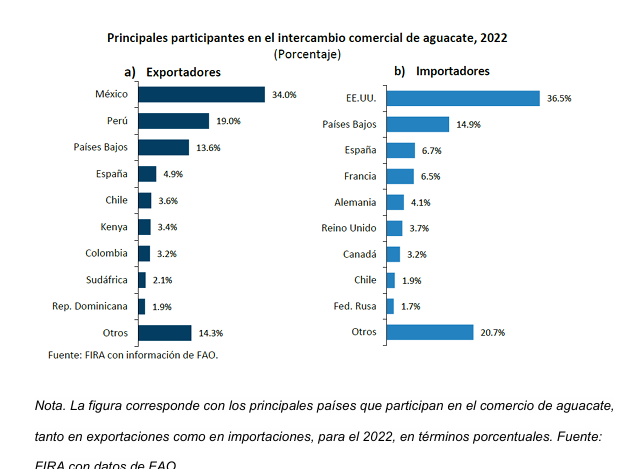
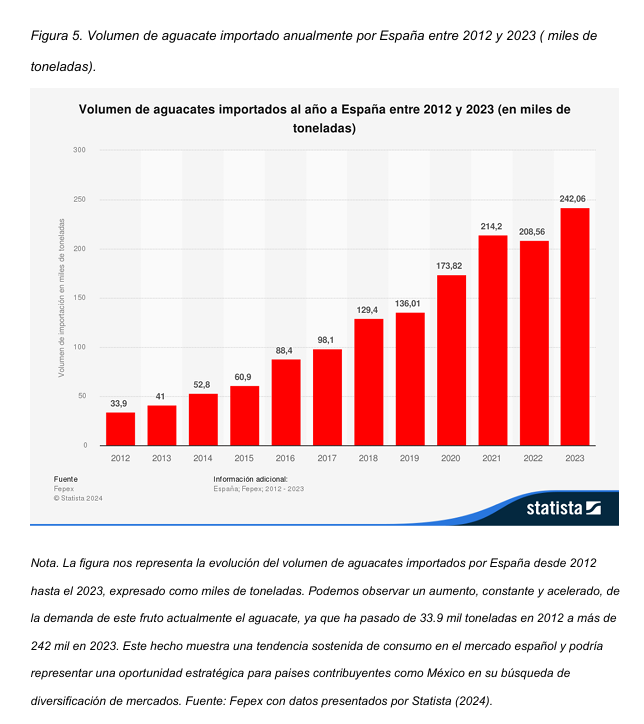

El marco teórico de este estudio analiza el contexto general del comercio internacional del aguacate mexicano, destacando su relevancia económica para el país y su posición como principal exportador a nivel mundial. Se abordan los principales tratados comerciales, en especial el Acuerdo Global México–Unión Europea, que facilita la entrada al mercado español sin aranceles. Además, se examina la fuerte dependencia del mercado estadounidense y la necesidad de diversificación para evitar riesgos económicos. Posteriormente, se justifica la elección de España como destino estratégico, considerando su creciente consumo per cápita, la apertura a productos saludables, y la oportunidad de posicionarse en nichos premium. El marco también incluye un análisis de la competencia internacional (Perú, Colombia, Marruecos e Israel), y destaca las ventajas del aguacate mexicano en términos de calidad sensorial, experiencia exportadora y certificaciones. Finalmente, se proponen estrategias de exportación, posicionamiento y diferenciación enfocadas al mercado español. 1. Introducción al comercio internacional del aguacate mexicano. El aguacate mexicano es el principal producto de exportación agrícola y es mundialmente conocido por su calidad, su buen sabor, su alto contenido de grasas saludables y por su producción regular durante todo el año. La importancia del aguacate en el comercio internacional recae en las características del mismo concierne las cualidades mencionadas anteriormente; además, la demanda internacional del aguacate ha estado creciendo de manera constante durante los últimos años gracias a su alto contenido nutricional y la versatilidad en la cocina que tiene. Imagen llamada exportadores 1.2 Principales países que importan el aguacate mexicano. México coloca aguacate en más de 30 diferentes países, convirtiéndose en su promotor. Hoy en día, Estados Unidos se posiciona como el primer país receptor (80% del total de exportaciones); sin embargo, otros mercados han ido cobrando fuerza: Canadá, Japón o España. Para el caso de Canadá, este 5% de exportación responde a un 3% de importación en el caso de Japón y finalmente España ha mostrado un incremento del 27% en el último lustro, siendo finalmente, un país señalado para la diversificación de mercados.

1.3 Consumo de aguacate en España, tendencias y crecimiento. El aguacate ha evolucionado de un producto de nicho a un alimentario cotidiano dentro del país. En 2022, el consumo per cápita se situó en torno a los 2.5 kilogramos por persona, lo que supone un incremento notable respecto a años precedentes, con este crecimiento vinculado a la demanda generada por productos naturales y saludables, al igual que por la popularidad del aguacate dentro de la dieta mediterránea y de la gastronomía de los restaurantes de alta cocina. Por otro lado, los hábitos de compra han cambiado en los últimos años, con un crecimiento sostenido de la venta de aguacate en supermercados y grandes superficies, donde representa el 60% del total de las ventas de esta fruta. Además, los mercados mayoristas juegan un papel importante, alcanzando el 25% de la comercialización del aguacate, mientras que el 15% restante corresponde a los restaurantes y a los puntos de venta de alimentación especializada.

1.4 conclusion del marco teórico El examen acerca del marco general, regional y sectorial del aguacate mexicano da como resultado la afirmación de que la diversificación comercial es una necesidad urgente. La dependencia existente de todo un país (el estadounidense) como mercado para el aguacate representa una auténtica vulnerabilidad que es necesario atacar mediante la exploración y la consolidación de nuevos destinos estratégicos. En este sentido, España se plantea como un país prioritario en el análisis, no solo por el crecimiento sostenido del consumo del aguacate, sino también por las condiciones logísticas, culturales y comerciales que se presentan como idóneas para la explotación de este producto. La importancia de la capacidad de México para productor durante todo el año, la experiencia del país azteca en la exportación y las pruebas de calidad permiten que el avocadito mexicano competirá como un país frente a otros competidores como Perú, Colombia o Marruecos. A través de una estrategia global que contemple: logística, sostenibilidad, diferenciación de marca y cumplimiento de la normativa establecida, el aguacate de origen mexicano no solo podrá consolidarse en el mercado español, sino utilizar dicho mercado como trampolín hacia la expansión del aguacate mexicano por Europa. En resumen, la diversificación hacia el mercado español no es una alternativa secundaria; por el contrario, se trata de una estrategia clave para garantizar la competitividad, la resiliencia y el crecimiento sostenible del sector aguacatero mexicano a medio y largo plazo.